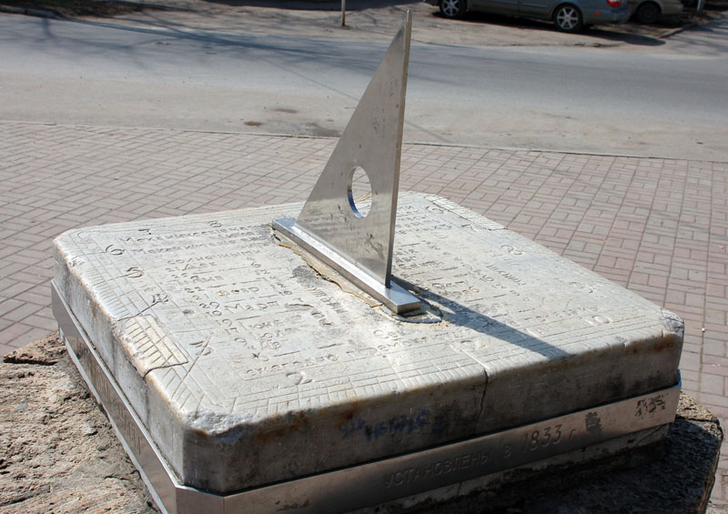
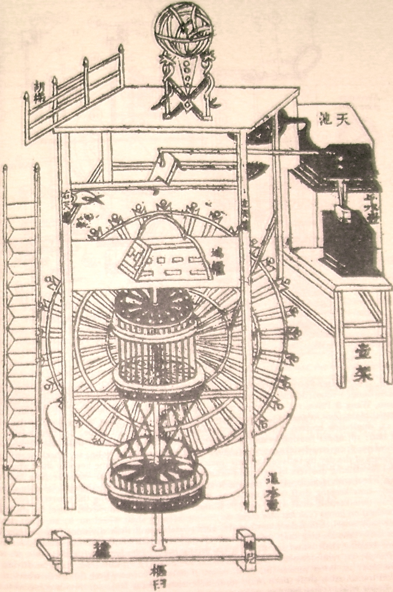
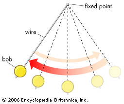
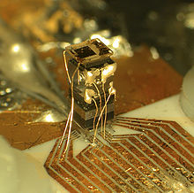

Tech: Now and Then

December 9th, 2020
Time has been a central idea that we've always needed nowadays. When do we have to do something? When should we sleep? When should we eat? Time has told us that. Even if it wasn't an external clock that we're looking at, our internal clocks can tell us these things too. But, how has telling time advanced over the ages? Where did it begin? For that, we'll have to go to the first recorded example of time measurement: Egyptians.
Egyptians told time by using something similar to a bent t-square (pictured above). The time is told from the top of the shape casting a shadow on the platform it's on. There was then more normal sundials, which had a rod in the air held up by the ground that would cast a shadow on a marking on the ground. Egyptians were the first to divide days into parts though (morning, afternoon, night). Though, the only problem was keeping track of time when it was night. That's why they also created the water clock.
The water clock could tell time at, well, any time of the day including night. It was found in the tomb of Amenhotep I, but it required water to constantly flow (not like a river was needed, but a replenishing of a cup every couple of hours). The Greeks also used this kind of clock, as they needed to keep track of time in some records due to trade and astrological records requiring them to be tracked. Then, the Chinese outdid everything done before.
Su Song, Chinese scientist and statesman, was the creator behind the Xinyl Xiangfayao, a technical marvel that pushed the boundaries of science. He created a mechanical clock tower, the first of its kind, in the 11th century. It still needed a waterwheel to run, but due to it having 133 clock jacks which made it sound the hours, it was the first mechanical clock ever created.
The next major advancement in timekeeping was the hourglass. Mainly used by sailors and others who couldn't have a water clock, it could keep track of time in a set interval that would always remain the same (unless it was touched). Incense and candles were used as hourglasses too, going out after a certain amount of time had passed.
The next major advancement was the idea of adding a pendulum to a mechanical clock, which would swing at a consistent rate and make the clock move at the exact accurate times. These kind of clocks were drafted by Galileo Galilei and Christiaan Huygens, major inventors of their era.
Watches were the next major advancement, as they could keep track of time on your wrist, so you wouldn't have to look for a clock to see what time it was, you'd only have to look at your wrist! They could be powered by gravity, springs, or some form of electrical power.
Now, the most relevant advancement (and the final one i'll talk about): The atomic clock. An atomic clock is based on the continous hyperfine transitions (small splits and shifts) that elements go through. The elements hydrogen-1, caesium-122, and rubidium-87 were the first used due to their abundance. They originally were incredibly heavy and hard to move around, but it would be helped by the creation of laser cooling, optical combs, and other things I really don't want to get into or else I'd type out 4 more paragraphs.
In conclusion, the process of timekeeping has been worked on for, well, a long time. We went from putting a stick in the ground to have the sun tell time to atoms splitting to tell us absolute approximate times. Science! Thanks for reading this, and I swear that I will write more and not take a whole month to get something out. Maybe.